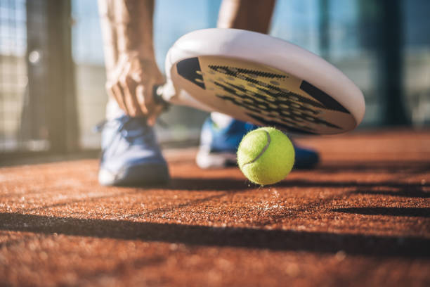

Inicio
Paddle:

Paddle
El pádel (del inglés paddle)2 es un deporte de raqueta con origen en México. Se juega siempre en parejas y consta de tres elementos fundamentales para su desarrollo: la pelota, la pala y el campo de juego o pista. Consiste en hacer botar la bola en el campo contrario, con la posibilidad de rebotar en las paredes.
Mas informacion: Paddle